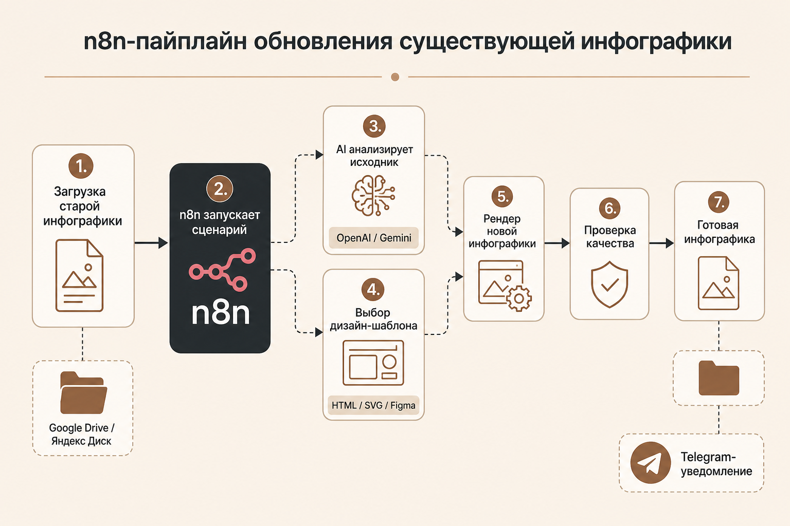
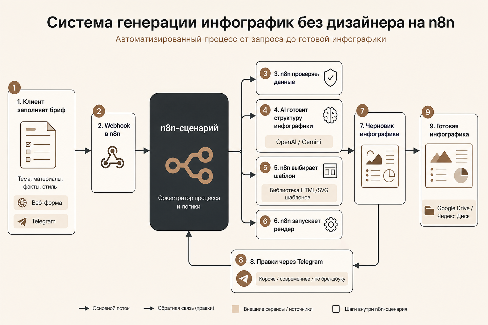

Что делаем в рамках задачи
- Разбираем существующие типы инфографики и смысловые блоки.
- Собираем правила нового визуального стиля по брендбуку.
- Настраиваем пакетную обработку папки с исходниками.
- Добавляем ручное утверждение спорных результатов.
AI-конвейер контента
Проект объединяет анализ старой инфографики, брендбук, AI-генерацию текстов и шаблонный рендеринг, чтобы стабильно выпускать новую инфографику в нужных форматах.
Подходит, если у клиента уже есть архив инфографики, но дизайн устарел или не соответствует новому брендбуку.
Пользователь загружает старые материалы, n8n запускает сценарий, AI извлекает смысл, а шаблонный рендер собирает новую инфографику.
Старая инфографика, материалы, факты, тексты, изображения, брендбук и требования к формату.
OCR и AI извлекают текст, смысловые блоки, структуру инфографики и важные ограничения.
Система выбирает тип инфографики: процесс, сравнение, инструкция, преимущества, статистика или презентационный блок.
HTML/SVG/Figma-шаблон собирает новую инфографику с нужными цветами, шрифтами и композицией.
Готовая инфографика сохраняется в папку, а клиент получает статус и ссылку на выгрузку.
Так может выглядеть первый MVP: n8n оркестрирует сценарий, а AI, шаблоны и хранилище выполняют отдельные этапы обработки.

Подходит, если нужно регулярно выпускать новую инфографику по брифу, материалам и заранее подготовленным шаблонам.
n8n принимает бриф из формы или Telegram, управляет AI-запросами, выбирает шаблоны, запускает рендер и возвращает готовую инфографику.

Минимальная версия строится вокруг n8n: он принимает задачу, вызывает AI, выбирает шаблон, запускает рендер и сохраняет результат.
Центр системы
Оркестрирует обработку: принимает webhook, ведет статусы, вызывает AI, передает данные в шаблон и отправляет уведомления.
Стек можно собрать постепенно: n8n управляет процессом, а AI, шаблоны, хранилище и рендер выполняют отдельные части сценария.
Клиент загружает файлы, выбирает сценарий и получает готовую инфографику.
Извлекает текст, переписывает смыслы, помогает выбрать шаблон и проверяет результат.
Хранит исходники, промежуточные файлы и финальные изображения.
Связывает загрузку, AI, шаблоны, рендеринг, статусы, правки и уведомления.
Дают стабильность: одинаковая сетка, размеры, шрифты и брендовые правила.
Сохраняет проекты, версии, промпты, статусы обработки и историю правок.
Для MVP достаточно сценариев n8n; отдельная очередь нужна только при большой нагрузке.
Размещает n8n, рендер-сервис, доступы к хранилищу и служебные сценарии.